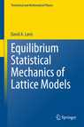

David A. Lavis and Roman Frigg (2025)
Details of Book
Springer Nature Link
 David A. Lavis (2015) Equilibrium Statistical Mechanics of Lattice Models Contents
ISBN 978-94-017-9429-9 and 978-94-017-9430-5 (eBook) Springer Dordrecht Heidelberg New York
London D.A. Lavis and G.M. Bell (1999) Statistical Mechanics of Lattice Systems: 1 Closed-Form and Exact Solutions Contents
ISBN 3-540-64437-7 Springer-Verlag Berlin Heidelberg New York D.A. Lavis and G.M. Bell (1999) Statistical Mechanics of Lattice Systems: 2 Exact, Series and Renormalization Group Methods Contents
ISBN 3-540-64436-9 Springer-Verlag Berlin Heidelberg New York Volume 1 is an enlarged and revised version of: G. M. Bell and D. A. Lavis (1989) Statistical Mechanics of Lattice Models Vol. 1: Closed Form and Exact Theories of Cooperative
Phenomena Ellis Horwood, Chichester. Professor George Bell died before Volume 2 was completed Obituaries appeared in the Guardian
and the Independent